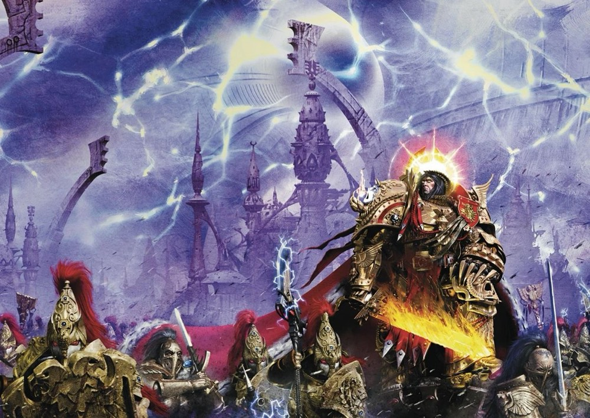
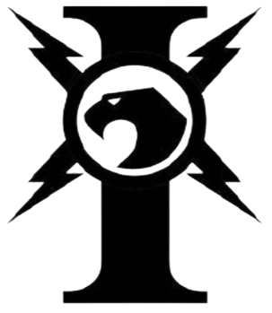

Webway War
| Webway War | |
|---|---|
| Part of the Horus Heresy | |
 The Emperor leads the Custodians in the Webway, from a fresco in the Imperial Dungeon Artwork © Games Workshop | |
| Date | c. 004–014.M31[a] |
| Location | The Imperial Webway beneath the Imperial Palace, Terra |
| Result | Strategic stalemate. Daemonic incursion contained; Imperial Webway Project lost; the Emperor bound to the Golden Throne |
| Belligerents | |
| Imperium  Legio Custodes, the Ten Thousand | Chaos |
| Commanders and leaders | |
| † Killed in action · (WIA) Wounded · (MIA) Missing | |
| Units involved | |
| The Ten Thousand under Constantin Valdor | |
| Strength | |
| The Ten Thousand of the Legio Custodes; size unrecorded | |
| Casualties and losses | |
| A large part of the Ten Thousand, including two Tribunes | |
| The Imperial Webway Project lost and the Emperor bound to the Golden Throne for the rest of the Heresy | |
The Webway War, also called the War Within the Webway or the Battle of the Webway, was a secret war fought during the Horus Heresy in the Imperial Webway, the network of passages that the Emperor had extended into the Webway from beneath the Imperial Palace on Terra. When Magnus the Red broke the Emperor's wards with a sorcerous message in the first days of the war, daemons poured into the Imperial tunnels. For some five years the Custodians, the Sisters of Silence and the forces of the Mechanicum fought to keep them from reaching the Palace.[1][2]
The war was lost in the Webway and won at the gate. The Imperial forces were driven back from the Impossible City, their great base, and the Emperor's project to give humanity its own Webway was ruined. But the daemons never broke into the Palace. The Emperor sealed the gate with his own power from the Golden Throne, and for the rest of the Heresy he could leave it only at great cost. The war explains his absence from the battles of the Heresy, and its consequence, the Emperor's binding to the Throne, outlasted the war by ten thousand years.[1][3]
Background
[edit]The Great Work
[edit]During the Unification Wars, before 712.M30, the Emperor found beneath a desert of the Terran continent of Asia a portal into the Webway, built in a distant age by a race far older than humanity. At its heart was a device that he made the centre of his greatest undertaking, known to the few who knew of it as the Great Work and later as the Imperial Webway Project. Over several centuries, tens of thousands of Mechanicum adepts laboured beneath the Palace to build a human gateway into the Webway and to extend human-built passages through it.[2][4]
The aim was nothing less than the freedom of humanity from the Warp. With a Webway of its own, the Imperium would no longer need Navigators to travel or astropaths to send messages. Every world would be joined to every other, as the Aeldari had once been joined before their Fall. The Emperor believed that only such unity could secure humanity's future.[2]
The alien passages carried their own psychic sheath that kept out the Warp. The human-built gateway and conduits had no such protection, and the Emperor maintained it himself from the throne that sat upon the gateway, the device later called the Golden Throne. To keep the work secret, he left the Great Crusade in the hands of Horus, whom he named Warmaster at Ullanor in 000.M31, and returned to Terra.[2][1]
The folly of Magnus
[edit]In 004.M31, on the eve of the Heresy, Magnus, primarch of the Thousand Sons, learned of Horus's corruption. Knowing that no ordinary message could reach the Emperor in time, he cast his warning through the Warp by sorcery, breaking through the psychic wards that surrounded the Palace. The message arrived, but its passage tore the Emperor's sheath over the Imperial Webway. Through the rifts, the armies of the Warp entered the Imperial tunnels.[1][2]
The Emperor had to take his seat on the throne at once and hold the gate with all his strength. His fury at Magnus led to the order that brought the Space Wolves and the Custodians to Prospero, though the order was changed in passage, and to the Burning of Prospero.[1]
Course of the war
[edit]Forces
[edit]The defence of the Imperial Webway fell to the Custodians, the Ten Thousand under their Captain-General Constantin Valdor. With them fought the Sisters of Silence, whose null nature made them deadly to daemons, Mechanicum war-machines and adepts, and auxiliaries of the Imperial Army. Their existence and their losses were kept secret from the Imperium at large, and much of the war is still known only from Custodian records.[2][5]

The Impossible City
[edit]The Imperial forces held a front deep in the Webway. Their base was Calastar, a vast abandoned Aeldari city within the labyrinth, which the Imperials called the Impossible City. From there they fought the daemons through endless passages, holding open the routes by which the Emperor hoped to resume his work when the war was won. The Emperor himself appeared among them at times, though he could leave the throne only briefly.[2]

Decline
[edit]The daemonic hosts were inexhaustible. The Custodian Tribunes Kadai Vilaccan and Jasac were killed, and command of the Custodians in the Webway passed to the Tribune Ra Endymion. About five years into the war, in about 009.M31,[b] the defence began to fail. The Impossible City fell to the daemons, and the Imperial forces were driven back toward Terra.[2]
The Unspoken Sanction
[edit]To cover the retreat, the Emperor had to leave the throne and fight in person. One thousand psykers were sacrificed to sustain the gate in his absence, in an act that the Custodians call the Unspoken Sanction. The Emperor went into the Webway and confronted the greatest of the daemons arrayed against him, Drach'nyen. Imperial records describe it as an entity born of the first murder of one human by another. It took the form of a primitive war-chief and wounded the Emperor, then became a great sword. The Emperor tore it from his body and cast it into Ra Endymion, binding the daemon within the Tribune's flesh.[2][c]
Since the daemon could not be destroyed, only imprisoned, the Emperor ordered Ra to run into the depths of the Webway as far as he could, carrying Drach'nyen with him. Ra obeyed without question. He was not seen again.[2]
The withdrawal
[edit]The survivors fell back to the gateway beneath the Palace. The Imperial passages were collapsed or abandoned, and the Emperor returned to the throne to hold the gate. From then on the defence of the Webway was the defence of a single portal.[2][1]
The gate during the Siege
[edit]For the rest of the Heresy the Emperor remained on the throne. The War Council of Terra was directed by Malcador the Sigillite and Rogal Dorn, and the Emperor spoke to his servants only through his Custodians or in visions. During the Siege of Terra, when the Emperor had to rise to fight, Malcador took his place on the throne. The burden consumed the Sigillite's life and he died there, holding the gate while his master went to war.[3][1]
After the death of Horus the dying Emperor was returned to the Palace and placed upon the throne. The Mechanicus, at the direction of Rogal Dorn, made it a life-support engine to sustain him. Whether the Emperor still holds the gate beneath the Palace, or only sustains the Astronomican and his own life, is disputed by Imperial scholars.[2]
Aftermath and legacy
[edit]The Webway War left the Custodians fewer in number than at any time since their founding, and it ended the Emperor's hope of freeing humanity from the Warp. The Imperium has relied on Navigators and astropaths ever since. The war's survivors kept its secrets. For most of the Imperium's history the very existence of the Imperial Webway was known only to the Custodians, the highest ranks of the Inquisition and a few others.[2]
Imperial scholars regard the war as one of the decisive campaigns of the Heresy despite its obscurity. It kept the Emperor from the field throughout the war, which allowed Horus to fight the primarchs one by one, and it bound him at last to the Golden Throne. It also shaped the Imperial view of psykers and of sorcery: the act that broke the wards was Magnus's, and the Imperium has never forgotten it.[5][1]
Timeline
[edit]| Date | Event |
|---|---|
| Before 712.M30 | During the Unification Wars the Emperor finds an ancient Webway portal beneath Terra and begins the Great Work. |
| 000.M31 | After the Triumph of Ullanor the Emperor returns to Terra to work on the Imperial Webway. |
| 001.M31 | The Council of Nikaea; the Emperor leaves for the Imperial Palace to resume the project. |
| 004.M31 | Magnus the Red's sorcerous warning breaks the wards; daemons enter the Imperial tunnels and the Emperor takes the throne. |
| 004.M31 | The Emperor's order sends Leman Russ and the Custodians to the Burning of Prospero. |
| 004–009.M31 | The Adeptus Custodes, Sisters of Silence and Mechanicum hold the front from the Impossible City of Calastar. |
| c. 008.M31 | Tribunes Kadai Vilaccan and Jasac are killed; Ra Endymion takes command.[d] |
| c. 009.M31 | The Impossible City falls; the Emperor leaves the throne, a thousand psykers die in the Unspoken Sanction, and Ra carries Drach'nyen into the depths.[e] |
| c. 009.M31 | The survivors withdraw to the gate beneath the Palace.[f] |
| 009–014.M31 | The Emperor holds the gate from the throne while Malcador the Sigillite and Rogal Dorn direct the war. |
| 014.M31 | Malcador takes the throne when the Emperor rises to face Horus, and dies on it; the Emperor is entombed in the Golden Throne. |
See also
[edit]Notes
[edit]- ^ The war began when the wards of the Imperial Webway were broken by Magnus in 004.M31, on the eve of the Heresy; some older records count it from 005.M31. The main campaign in the Webway ended with the fall of the Impossible City and the Imperial withdrawal, about five years later. The gate beneath the Palace was held until the end of the Siege of Terra.
- ^ Date estimated from the sequence of events.
- ^ A daemon blade of the same name was later wielded by Abaddon. How it was freed from its prison is not recorded in Imperial archives.
- ^ Date estimated from the sequence of events.
- ^ Date estimated from the sequence of events.
- ^ Date estimated from the sequence of events.
References
[edit]- ^ a b c d e f g h Watson, Ian. Chaos Child (novel). Black Library. Codex: Drukhari (8th Edition), "A Galaxy in Shadow," pg. 11. Games Workshop.
- ^ a b c d e f g h i j k l m Watson, Ian. Draco (novel). Black Library. Watson, Ian. Harlequin (novel). Black Library.
- ^ a b Sanders, Rob. Atlas Infernal (novel). Black Library. Codex: Dark Eldar (7th Edition), pp. 8, 11-15, 18-20, 35, 42, 54, 63, 75, 85-86, 88, 95, 98, 105-107, 110, 114. Games Workshop.
- ^ Codex: Eldar (7th Edition), pp. 9, 12, 15, 23, 26-27, 44, 52-55, 58, 135, 146, 149, 153, 166, 181, 189, 193, 197. Games Workshop. Codex: Harlequins (7th Edition) (Ebook), pp. 3, 7, 9, 12, 15, 21, 23, 27, 30, 34-35, 37, 68, 70. Games Workshop.
- ^ a b Daemonigfuge (Graphic Novel). Codex: Dark Eldar (5th Edition), pp. 6-8, 20. Games Workshop.